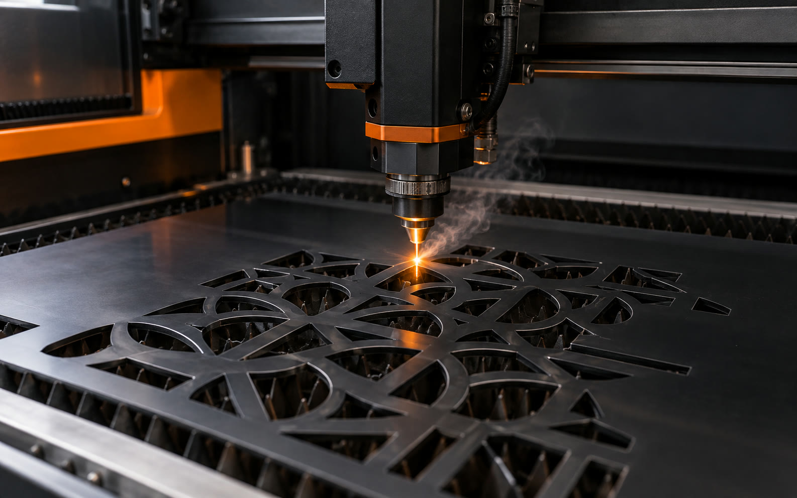

<section class="pp3d-tech" dir="rtl" aria-labelledby="pp3d-tech-title">
  <div class="pp3d-tech__shell">
    <header class="pp3d-tech__header">
      <div class="pp3d-tech__index"><span>05</span><i></i><b>טכנולוגיות</b></div>
      <div class="pp3d-tech__heading-grid">
        <h2 id="pp3d-tech-title">הטכנולוגיה הנכונה לכל יישום<span>.</span></h2>
        <p>מתאימים את שיטת הייצור לדרישות החלק, לדיוק, לחומר ולכמות.</p>
      </div>
    </header>

    <div class="pp3d-tech__grid">
      <article class="pp3d-tech__card" tabindex="0">
        
        <div class="pp3d-tech__copy">
          <span class="pp3d-tech__number">01</span>
          <h3>FDM</h3>
          <p>חלקים פונקציונליים לאבות טיפוס ולסדרות קצרות.</p>
          <span class="pp3d-tech__arrow" aria-hidden="true">←</span>
        </div>
      </article>

      <article class="pp3d-tech__card" tabindex="0">
        
        <div class="pp3d-tech__copy">
          <span class="pp3d-tech__number">02</span>
          <h3>MSLA</h3>
          <p>פרטים מדויקים וגימור חלק ברזולוציה גבוהה.</p>
          <span class="pp3d-tech__arrow" aria-hidden="true">←</span>
        </div>
      </article>

      <article class="pp3d-tech__card" tabindex="0">
        
        <div class="pp3d-tech__copy">
          <span class="pp3d-tech__number">03</span>
          <h3>חיתוך לייזר</h3>
          <p>חיתוך מדויק של אקריליק, עץ וחומרי לוח.</p>
          <span class="pp3d-tech__arrow" aria-hidden="true">←</span>
        </div>
      </article>
    </div>
  </div>
</section>
